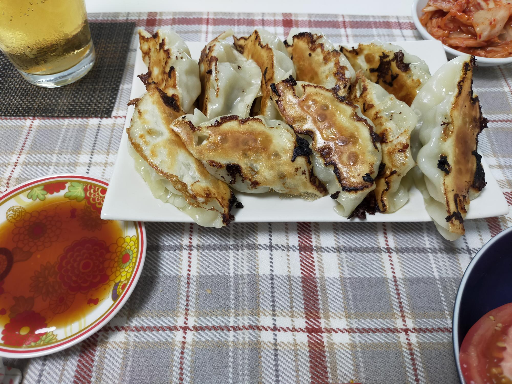

でっかい餃子
材料・金額
| 材料 | 購入金額 | 使用量 | 金額 | kcal |
|---|---|---|---|---|
| 餃子の皮 20枚入大判 |
150 | 20枚 | 150 | 548 |
| 豚ひき肉300g | 470 | 250g | 392 | 553 |
| きゃべつ1玉 1,500g |
108 | 200g | 14 | 9 |
| ニラ1束 | 94 | 1/2束 | 47 | 10 |
| ☆ニンニク | 105 | 1片 | 9 | - |
| ☆しょうが | 106 | 5g | 5 | - |
| ☆ごま油 | - | 小2 | - | 72 |
| ☆ウェイパー | - | 小1 | - | 20 |
| ☆しょうゆ | - | 小1 | - | 4 |
| ☆酒 | - | 小1 | - | 5 |
| ☆さとう | - | 小1/2 | - | 6 |
| ごま油(焼く用) | - | 小2 | - | 72 |
| 合計（2人分） | - | - | 617 | 1,299 |
| 1人分（合計×0.5） | - | - | 309 | 650 |
作り方
- キャベツはラップしてレンジ600Wに2分かけて、冷めるまで置いておく
- ニラはみじん切り
- ボウルに豚ひき肉と、☆を入れ（ニンニク、しょうがはすりおろす）よぉく練っておく
- キャベツが冷めたら、みじん切りにし、水気をギュッと絞って（冷めてないと熱いので注意）ボウルに入れよく混ぜる
- ニラも入れて混ぜて、包む
- お湯を沸かしておく
- フライパンにキッチンペーパーで油を引いて熱する
- フライパンに餃子を並べる
- お湯をフライパンの底から1cmくらい入れ、フタをして蒸し焼きにする
- 大体水分が飛んでパチパチいってきたら、周りからごま油を入れて、フライパンをゆすって、餃子をはがす
- 好きな具合に焦げ目がついたらできあがり
振り返り
2人暮らしで、キャベツが安い‼と1玉買ってしまうと、使い切りに難儀します。今回は、トマトスープ→（トマトスープをアレンジした）カレー→パスタ→広島風お好み焼き→お好み焼き（というか、もはやキャベツ焼き）→今回の餃子でやっと、終わりがみえてきました。あと少しの残りは味噌汁にでもしようかと思います。
以前、神戸でいただいた餃子は、小さくて野菜が多くて、たくさん食べられる餃子でした。この餃子は、でっかくてお肉も多いので、1人10個で主食のご飯が無くても、おなかいっぱいです。餃子とホッピー、最高。
餃子手作りは休みの日限定で、夜に餃子を食べたいときは、冷凍餃子です。かつては、餃子を包んで（焼く前に）冷凍保存等もしていたのですが、冷凍した餃子を家で焼くと皮が破れたり、いまいち上手くいかない…ため、冷凍については、すっかり日高屋様にお世話になっています。